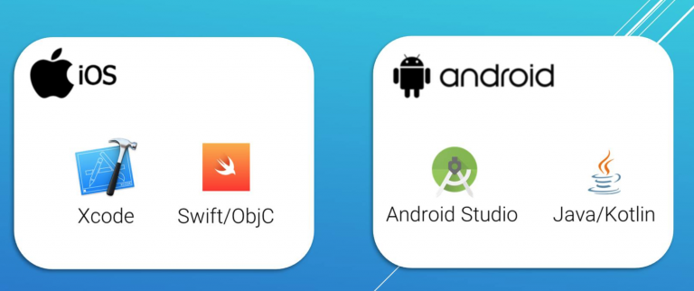
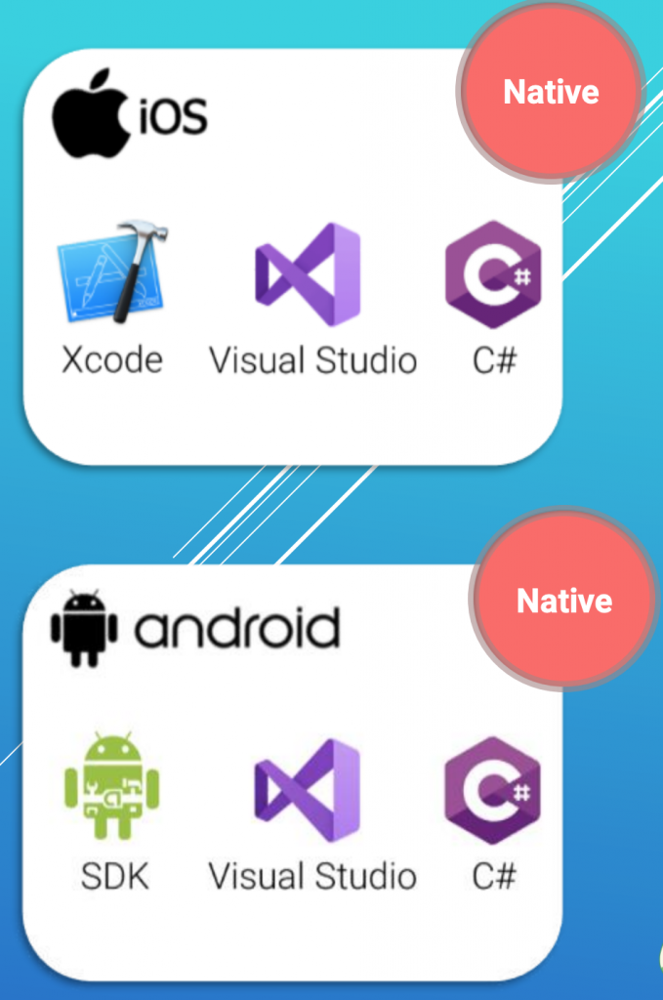
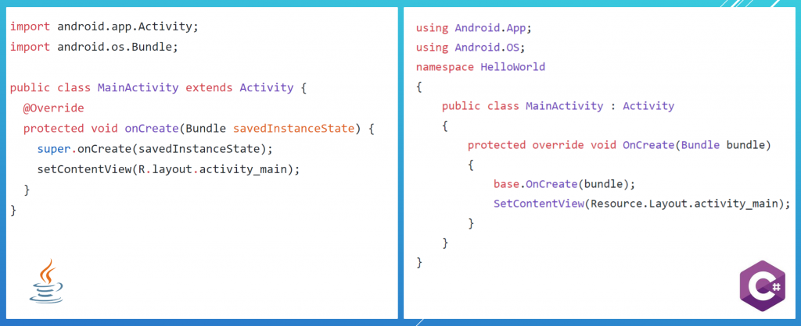
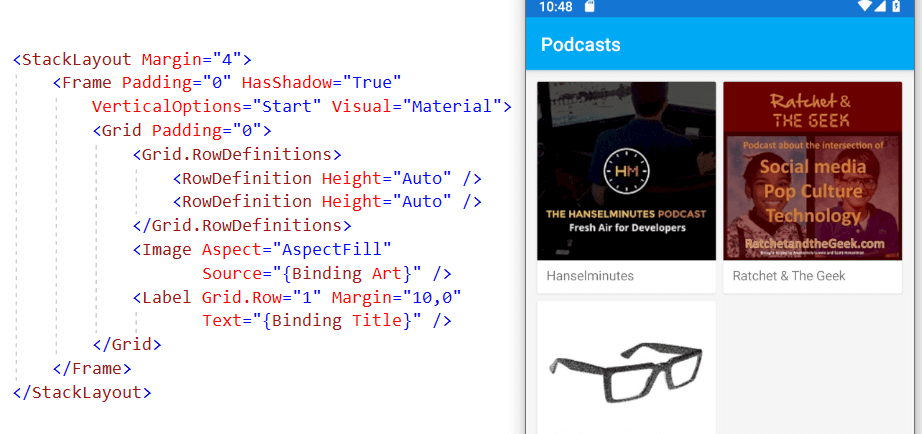

Hiểu về Xamarin
“Xamarin là nền tảng của Microsoft dùng để phát triển ứng dụng di động cho Android và iOS với nền tảng Mono .NET và ngôn ngữ C#.” Đó là định nghĩa về Xamarin mà bạn cần phải hiểu trước khi bắt đầu học lập trình trên nền tảng này. Vậy thì hiểu như thế nào mới đúng?
Đầu tiên có thể bạn biết có 2 hệ điều hành di động thông minh “bự” nhất hiện tại là Android (Google) và iOS (Apple) và để phát triển ứng dụng trên đó Google và Apple đều đưa ra bộ SDK và các công cụ tương ứng để lập trình viên có thể sử dụng, ta gọi đây là phương pháp “chính chủ”, cụ thể cơ bản ta có: 
Android (Google): Android SDK, Java, Android Studio.
iOS (Apple): iOS SDK, Swift, Xcode
Vậy để phát triển ứng dụng cho Android, bạn phải:
Học ngôn ngữ Java
Hiểu về Android SDK
Kiến trúc ứng dụng
Cách xây dựng giao diện
Xử lý tương tác người dùng
…
Và tương tự cho iOS. Rất nhiều thứ bạn phải làm chủ khi muốn phát triển ứng dụng di động và một lập trình viên di động thường họ sẽ gắn bó với một hệ điều hành trước và thường chỉ cần họ tiếp tục tích luỹ kinh nghiệm và kiến thức thì lương cũng đã rủng rỉnh rồi.
Tuy nhiên về phía doanh nghiệp, khi họ cần phát triển ứng dụng di động phụ vụ mô hình kinh doanh của mình thì việc không thể bỏ qua là phải có ứng dụng chạy được trên cả 2 hệ điều hành “bự” trên. Về cơ bản họ sẽ phải xây dựng 2 đội ngủ riêng biệt cho mỗi hệ điệu hành và mặc dù cùng chức năng nhưng sẽ phát triển 2 lần. Không có gì để nói nếu doanh nghiệp bạn cũng “bự” luôn, nhưng đối với doanh nghiệp nhỏ hoặc sản phẩm nhỏ hoặc cần thời gian thử nghiệm thị trường nhanh… thì việc phát triển ứng dụng đa nền tảng trên sẽ là vấn đề.
Có cầu thì phải có cung cho phù hợp. Do đó các công nghệ hỗ trợ đa nền tảng lần lượt ra đời, phát triển qua nhiều thế hệ, với ưu điểm, khuyết điểm đan xen. Trong đó có Xamarin.  Khi Xamarin ra đời nó chỉ thay thế phương pháp “chính chủ” ở trên ở một chỗ duy nhất là ngôn-ngữ-lập-trình. Nghĩa là thay vì Android bạn sử dụng Java, iOS sử dụng Swift thì giờ bạn chỉ cần sử dụng một-ngôn-ngữ là C#.
Hay nói cách khác nếu có 2 người muốn trở thành lập trình viên Android, người A bắt đầu bằng học Java, người B bắt đầu bằng học C#, còn lộ trình còn lại thì 100% y hệt nhau (như đã liệt kê ở trên). Tương tự với iOS.  Quay lại với doanh nghiệp, vậy nếu dùng Xamarin, thì họ cũng phải xây 2 đội ngủ Xamarin.Android và Xamarin.iOS để phát triển sản phẩm di động của mình. Giả sử chi phí nhân lực là như nhau, thì so với phương pháp “chính chủ” thì họ tiết kiệm được gì?
Họ sẽ rút ngắn được thời gian phát triển do các module về logic, data, truy cập web API,.. có thể chia sẻ giữa 2 nền tảng do cùng sử dụng C# .NET. Việc khác nhau giữa 2 đội ngủ lúc này là phát triển UI/UX và các chức năng đặc trưng của mỗi nền tảng.
Tuy nhiên ở đâu đó vẫn có nhu cầu phát triển ứng dụng đa nền tảng với các ứng dụng nhỏ gọn hay không quá phức tạp với chi phí thấp hơn hoặc thời gian phát triển ngắn hơn thì có công nghệ nào có thể đáp ứng hoặc cụ thể Xamarin có đáp ứng không?  Câu trả lời là có. Để đáp ứng nhu cầu trên, Xamarin ra mắt một thư viện và một kiến trúc mới tên là Xamarin.Forms. Nó sẽ hỗ trợ xây dựng giao diện mà khi thực thi nó sẽ được đọc và chuyển sang giao diện ứng với nền tảng Xamarin.Android hay Xamarin.iOS tương ứng, giao diện được định nghĩa bằng C# hoặc XAML. Như vậy sẽ rút ngắn được rất nhiều do có thể chia sẻ từ 80-100% lượng code cho cả 2 nền tảng. Tuy nhiên sản phẩm của bạn sẽ bị hạn chế về tốc độ xử lý UI do phải qua một bước trung gian. Nếu sự thay đổi này không đáng kể thì tại sao không?
Tuy nhiên ngoài Xamarin thì cũng có những công nghệ khác tương tự trong lĩnh vực lập trình ứng dụng di động đa nền tảng, như ReactNative, Flutter,…
Vậy nếu bạn đang muốn bước vào lập trình di động thì đâu là lựa chọn thích hợp? Sau đây là một số đặc trưng của lập trình di động (LTDĐ) nói chung và lập trình Xamarin nói riêng, bạn có thể dựa vào chúng để xác định mình có phù hợp không
- Khá tốn kém khoản đầu tư về máy tính, điện thoại (đặc biệt là iOS)
- Phải làm chủ được ngôn ngữ lập trình tương ứng (Java, Swift, C#, Javascript)
- Hiểu về hệ điều hành di động, UI/UX cơ bản của hệ điều hành đó, nếu làm đa nền tảng thì phải hiểu hết cả hai
- Ứng dụng di động sẽ phụ thuộc vào hệ điều hành và nhà cung cấp, họ cho sử dụng như thế nào thì phải theo họ (vd muốn sử dụng GPS phải xin phép người dùng)
- Nếu làm trên đa nền tảng thì các kiến thức về sharing code, dependency, packaging… là điều không thể thiếu
- Các công nghệ đa nền tảng cho bạn một bộ UI Framework chung (như Xamarin.Forms có XAML, ReactNative có React), nên bạn phải tìm hiểu cách sử dụng chúng (như cách trình bày, cách binding dữ liệu) và ngoài ra bạn cũng phải tìm hiểu thêm về UI cơ bản của riêng Android, iOS nếu bạn muốn xây dựng thêm nhiều thứ
- Riêng Xamarin, sử dụng IDE là Visual Studio, một IDE tốt nhưng “nặng”
- Các thư viện đa nền tảng đôi khi có những lỗi của chính nó, gây ảnh hưởng tới việc phát triển của dự án
Túm lại, Xamarin là nền tảng “mì ăn liền” đối với doanh nghiệp, nhưng không phải “mì ăn liền” đối với lập trình viên.